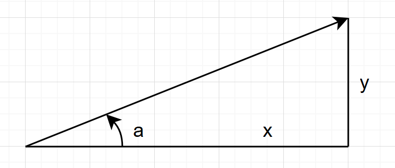

Virtual diffractometer axis#
Demonstrate a diffractometer where one of the expected axes must be computed from one or more additional diffractometer positioners.
One case might be where a rotational axis $a$ is operated by a tangent linear translation $y$ at fixed distance $x$ from the center of rotation. In this simple sketch, the relationships are defined: \(\tan{a} = y / x\)

Preparation#
The virtual axis must be defined with the features common to the other
diffractometer axes (all based on ophyd.PositionerBase).
Since this is a virtual real axis and not a pseudo, the easiest way to
ensure these features are available is to create a subclass of
ophyd.SoftPositioner (based on ophyd.PositionerBase) and override the parts
which are custom to the virtual axis. A virtual pseudo axis should subclass
from hklpy2.Hklpy2PseudoAxis.
The ophyd.DerivedSignal is not based on ophyd.PositionerBase and, as such,
is missing many features of the positioner interface.
Parameters
$x$ : A constant specified when creating the diffractometer object. Same engineering units as $y$.
$y$ : The physical translation axis. Specify the name of this diffractometer Component when creating the diffractometer object. The virtual positioner class will access the named diffractometer Component.
$a$ : The virtual rotation angle. When $a$ is read, its position is computed from $y$. Any movement of $a$ is translated into a movement of $y$.
Virtual positioner class#
Using hklpy2.misc.VirtualPositionerBase as a base class, create the
custom class for the specifications of tth, our virtual rotation axis. Here, we override these methods:
__init__(): $x$ - Add additionaldistancekeyword argument.forward(): Compute $a$ from $y$.inverse(): Compute $y$ from $a$.
import math
from hklpy2.misc import VirtualPositionerBase
class VirtualRotationPositioner(VirtualPositionerBase):
"""Compute virtual rotation from physical translation axis."""
def __init__(self, *, distance: float = 100, **kwargs):
"""Distance from translation axis zero position to center of rotation."""
self.distance = distance # same units as physical
super().__init__(**kwargs)
def forward(self, translation: float) -> float:
"""Return virtual rotation angle (degrees) from physical translation."""
return math.atan2(translation, self.distance) * 180 / math.pi
def inverse(self, rotation: float) -> float:
"""Return physical translation from virtual rotation angle (degrees)."""
return self.distance * math.tan(rotation * math.pi / 180)
Custom diffractometer class#
Here, we pick the
4-circle
E4CV geometry to demonstrate a diffractometer that uses this new
VirtualRotationPositioner class.
tth(as $a$): Override the existingtthComponent with theVirtualRotationPositioner, supplying the additional kwargs.dy(as $y$): Add adyComponent as aSoftPositioner, supplying initial position and limits.distance(as $x$): Pass this constant as a keyword argument when constructing the diffractometer object.
Note the kind="hinted" kwarg, which designates a Component to be included in a
live table or plot during a scan.
Why not use hklpy2.creator()?
We must write our own Python class. The hklpy2.creator() is not prepared
yet to create a diffractometer
with a custom class and keyword arguments such as this one.
Maybe, in the future ...
gonio = hklpy2.creator(
name="gonio",
solver="hkl_soleil",
geometry="E4CV",
reals = {
omega: None,
chi: None,
phi: None,
tth: {
"class": "VirtualRotationPositioner",
"init_pos": 0,
"physical_name": "dy",
"distance": 1000,
"kind": "hinted",
},
dy: {
"limits": (-10, 200),
# all other kwargs use defaults
}
}
)
But we still need to add some code in the __init__() method.
Using the factory function to create a base class, we define a custom class:
import hklpy2
from ophyd import Component, SoftPositioner
MyBase = hklpy2.diffractometer_class_factory(
solver="hkl_soleil",
geometry="E4CV",
)
class MyGoniometer(MyBase):
# Replace existing axis with virtual 2Theta.
# Point it at the 'dy' axis (below).
tth = Component(
VirtualRotationPositioner,
init_pos=0,
physical_name="dy",
distance=1000,
kind="hinted",
)
# Add the translation axis 'dy'.
dy = Component(
SoftPositioner,
init_pos=0,
limits=(-10, 200),
kind="hinted",
)
def __init__(self, *args, **kwargs):
super().__init__(*args, **kwargs)
self.tth._finish_setup()
Diffractometer object#
Move
dy(physical axis), reporttthandlat each step.Move
tth(virtual axis), reportdyandlat each step.Move
l(pseudo axis), reporttthanddyat each step.
gonio = MyGoniometer(name="gonio")
gonio.add_sample("vibranium", 2*math.pi)
gonio.wh()
wavelength=1.0
pseudos: h=0, k=0, l=0
reals: omega=0, chi=0, phi=0, tth=0
auxiliaries: dy=0
Bluesky scans#
Demonstrate the relationships between dy, tth, and l through bluesky scans.
Scan
dy(physical axis), reporttthandlat each step.Scan
tth(virtual axis), reportdyandlat each step.Scan
l(pseudo axis), reporttthanddyat each step.
Start with a simple setup, but no detectors or data collection. Just tables and plotting.
import bluesky
from bluesky import plans as bp
from bluesky.callbacks.best_effort import BestEffortCallback
bec = BestEffortCallback()
RE = bluesky.RunEngine()
RE.subscribe(bec)
bec.disable_plots()
Scan physical axis dy#
RE(bp.scan([gonio.dy, gonio.tth, gonio.l], gonio.dy, -1, 10, 11))
gonio.wh()
Transient Scan ID: 1 Time: 2025-07-21 15:06:10
Persistent Unique Scan ID: '288c4df3-b7e6-4439-a653-e051e6d3b2b6'
New stream: 'primary'
+-----------+------------+------------+------------+------------+
| seq_num | time | gonio_dy | gonio_l | gonio_tth |
+-----------+------------+------------+------------+------------+
| 1 | 15:06:10.3 | -1.000 | -0.006 | -0.057 |
| 2 | 15:06:10.3 | 0.100 | 0.001 | 0.006 |
| 3 | 15:06:10.3 | 1.200 | 0.008 | 0.069 |
| 4 | 15:06:10.3 | 2.300 | 0.014 | 0.132 |
| 5 | 15:06:10.3 | 3.400 | 0.021 | 0.195 |
| 6 | 15:06:10.3 | 4.500 | 0.028 | 0.258 |
| 7 | 15:06:10.3 | 5.600 | 0.035 | 0.321 |
| 8 | 15:06:10.3 | 6.700 | 0.042 | 0.384 |
| 9 | 15:06:10.3 | 7.800 | 0.049 | 0.447 |
| 10 | 15:06:10.3 | 8.900 | 0.056 | 0.510 |
| 11 | 15:06:10.3 | 10.000 | 0.063 | 0.573 |
+-----------+------------+------------+------------+------------+
generator scan ['288c4df3'] (scan num: 1)
wavelength=1.0
pseudos: h=-0.0003, k=0, l=0.0628
reals: omega=0, chi=0, phi=0, tth=0.5729
auxiliaries: dy=10.0
Scan virtual axis tth#
RE(bp.scan([gonio.dy, gonio.tth, gonio.l], gonio.tth, -0.1, 0.5, 11))
gonio.wh()
Transient Scan ID: 2 Time: 2025-07-21 15:06:10
Persistent Unique Scan ID: 'defaaece-f675-4fb0-bce6-44845b0d0135'
New stream: 'primary'
+-----------+------------+------------+------------+------------+
| seq_num | time | gonio_tth | gonio_dy | gonio_l |
+-----------+------------+------------+------------+------------+
| 1 | 15:06:10.5 | -0.100 | -1.745 | -0.011 |
| 2 | 15:06:10.5 | -0.040 | -0.698 | -0.004 |
| 3 | 15:06:10.5 | 0.020 | 0.349 | 0.002 |
| 4 | 15:06:10.5 | 0.080 | 1.396 | 0.009 |
| 5 | 15:06:10.5 | 0.140 | 2.443 | 0.015 |
| 6 | 15:06:10.5 | 0.200 | 3.491 | 0.022 |
| 7 | 15:06:10.5 | 0.260 | 4.538 | 0.029 |
| 8 | 15:06:10.5 | 0.320 | 5.585 | 0.035 |
| 9 | 15:06:10.5 | 0.380 | 6.632 | 0.042 |
| 10 | 15:06:10.5 | 0.440 | 7.680 | 0.048 |
| 11 | 15:06:10.5 | 0.500 | 8.727 | 0.055 |
+-----------+------------+------------+------------+------------+
generator scan ['defaaece'] (scan num: 2)
wavelength=1.0
pseudos: h=-0.0002, k=0, l=0.0548
reals: omega=0, chi=0, phi=0, tth=0.5
auxiliaries: dy=8.7269
Scan pseudo axis l#
RE(bp.scan([gonio.dy, gonio.tth, gonio.l], gonio.l, 0.01, 0.05, 11))
gonio.wh()
Transient Scan ID: 3 Time: 2025-07-21 15:06:10
Persistent Unique Scan ID: '029043a7-f32d-4232-97a1-49029e9e3e2d'
New stream: 'primary'
+-----------+------------+------------+------------+------------+
| seq_num | time | gonio_l | gonio_dy | gonio_tth |
+-----------+------------+------------+------------+------------+
| 1 | 15:06:10.7 | 0.010 | 1.592 | 0.091 |
| 2 | 15:06:10.7 | 0.014 | 2.228 | 0.128 |
| 3 | 15:06:10.7 | 0.018 | 2.865 | 0.164 |
| 4 | 15:06:10.7 | 0.022 | 3.502 | 0.201 |
| 5 | 15:06:10.7 | 0.026 | 4.138 | 0.237 |
| 6 | 15:06:10.7 | 0.030 | 4.775 | 0.274 |
| 7 | 15:06:10.7 | 0.034 | 5.411 | 0.310 |
| 8 | 15:06:10.7 | 0.038 | 6.048 | 0.347 |
| 9 | 15:06:10.7 | 0.042 | 6.685 | 0.383 |
| 10 | 15:06:10.7 | 0.046 | 7.321 | 0.419 |
| 11 | 15:06:10.7 | 0.050 | 7.958 | 0.456 |
+-----------+------------+------------+------------+------------+
generator scan ['029043a7'] (scan num: 3)
wavelength=1.0
pseudos: h=-0.0002, k=0, l=0.05
reals: omega=0.228, chi=0, phi=-0.2741, tth=0.456
auxiliaries: dy=7.958